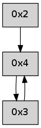

>> << IDX [start] -100 -25 -5 +0 +5 +25 +100 [280.162984133]
 Previous packets
----------------------------------------------------------------------
275.145756 beacon01(adaf) #0 coord=01,02,05,03,04 cycle=368.0ms assoc
-- color-indic=0 64 ed b1
275.155712 beacon02(adaf) #0 coord=01,02,05,03,04 cycle=368.0ms assoc 64 d7 10
275.165714 beacon05(adaf) #0 coord=01,02,05,03,04 cycle=368.0ms assoc 64 9c 5c
275.175713 beacon03(adaf) #0 coord=01,02,05,03,04 cycle=368.0ms assoc 64 1f ba
275.185713 beacon04(adaf) #0 coord=01,02,05,03,04 cycle=368.0ms assoc 64 54 f6
275.197372 [Hello(4): seq=68 sym=3 asym=2 sysInfo= stat=3:4,0,0,0/2:9,0,0,0]
----------------------------------------------------------------------
275.563857 beacon01(adaf) #0 coord=01,02,05,03,04 cycle=368.0ms assoc
-- color-indic=0 64 85 1a
275.573815 beacon02(adaf) #0 coord=01,02,05,03,04 cycle=368.0ms assoc 64 bf bb
275.583814 beacon05(adaf) #0 coord=01,02,05,03,04 cycle=368.0ms assoc 64 f4 f7
275.593814 beacon03(adaf) #0 coord=01,02,05,03,04 cycle=368.0ms assoc 64 77 11
275.603824 beacon04(adaf) #0 coord=01,02,05,03,04 cycle=368.0ms assoc 64 3c 5d
275.615455 [Hello(2): seq=567 sym=3,4 sysInfo= stat=3:15,0,0,0/4:5,0,0,0]
----------------------------------------------------------------------
275.981962 beacon01(adaf) #0 coord=01,02,05,03,04 cycle=368.0ms assoc
-- color-indic=0 64 52 84
275.991918 beacon02(adaf) #0 coord=01,02,05,03,04 cycle=368.0ms assoc 64 68 25
276.001918 beacon05(adaf) #0 coord=01,02,05,03,04 cycle=368.0ms assoc 64 23 69
276.011919 beacon03(adaf) #0 coord=01,02,05,03,04 cycle=368.0ms assoc 64 a0 8f
276.021919 beacon04(adaf) #0 coord=01,02,05,03,04 cycle=368.0ms assoc 64 eb c3
276.033592 [Hello(4): seq=69 sym=3 asym=2 sysInfo= stat=3:4,0,0,0/2:9,0,0,0]
----------------------------------------------------------------------
276.400063 beacon01(adaf) #0 coord=01,02,05,03,04 cycle=368.0ms assoc
-- color-indic=0 64 b8 92
276.410019 beacon02(adaf) #0 coord=01,02,05,03,04 cycle=368.0ms assoc 64 82 33
276.420019 beacon05(adaf) #0 coord=01,02,05,03,04 cycle=368.0ms assoc 64 c9 7f
276.430020 beacon03(adaf) #0 coord=01,02,05,03,04 cycle=368.0ms assoc 64 4a 99
276.440020 beacon04(adaf) #0 coord=01,02,05,03,04 cycle=368.0ms assoc 64 01 d5
276.451681 [Hello(2): seq=568 sym=3,4 sysInfo= stat=3:15,0,0,0/4:6,0,0,0]
----------------------------------------------------------------------
276.818164 beacon01(adaf) #0 coord=01,02,05,03,04 cycle=368.0ms assoc
-- color-indic=0 64 6f 0c
276.828122 beacon02(adaf) #0 coord=01,02,05,03,04 cycle=368.0ms assoc 64 55 ad
276.838121 beacon05(adaf) #0 coord=01,02,05,03,04 cycle=368.0ms assoc 64 1e e1
276.848122 beacon03(adaf) #0 coord=01,02,05,03,04 cycle=368.0ms assoc 64 9d 07
276.858122 beacon04(adaf) #0 coord=01,02,05,03,04 cycle=368.0ms assoc 64 d6 4b
276.869797 [Hello(4): seq=70 sym=3 asym=2 sysInfo= stat=3:5,0,0,0/2:9,0,0,0]
----------------------------------------------------------------------
277.236267 beacon01(adaf) #0 coord=01,02,05,03,04 cycle=368.0ms assoc
-- color-indic=0 64 07 a7
277.246224 beacon02(adaf) #0 coord=01,02,05,03,04 cycle=368.0ms assoc 64 3d 06
277.256224 beacon05(adaf) #0 coord=01,02,05,03,04 cycle=368.0ms assoc 64 76 4a
277.266225 beacon03(adaf) #0 coord=01,02,05,03,04 cycle=368.0ms assoc 64 f5 ac
277.276225 beacon04(adaf) #0 coord=01,02,05,03,04 cycle=368.0ms assoc 64 be e0
277.287879 [Hello(2): seq=569 sym=4 sysInfo= stat=4:7,0,0,0]
----------------------------------------------------------------------
277.654370 beacon01(adaf) #0 coord=01,02,05,03,04 cycle=368.0ms assoc
-- color-indic=0 64 d0 39
277.664326 beacon02(adaf) #0 coord=01,02,05,03,04 cycle=368.0ms assoc 64 ea 98
277.674326 beacon05(adaf) #0 coord=01,02,05,03,04 cycle=368.0ms assoc 64 a1 d4
277.684327 beacon03(adaf) #0 coord=01,02,05,03,04 cycle=368.0ms assoc 64 22 32
277.694326 beacon04(adaf) #0 coord=01,02,05,03,04 cycle=368.0ms assoc 64 69 7e
277.705969 [Hello(4): seq=71 sym=3 sysInfo= stat=3:6,0,0,0]
----------------------------------------------------------------------
278.072473 beacon01(adaf) #0 coord=01,02,05,03,04 cycle=368.0ms assoc
-- color-indic=0 64 c6 f9
278.082428 beacon02(adaf) #0 coord=01,02,05,03,04 cycle=368.0ms assoc 64 fc 58
278.092429 beacon05(adaf) #0 coord=01,02,05,03,04 cycle=368.0ms assoc 64 b7 14
278.102430 beacon03(adaf) #0 coord=01,02,05,03,04 cycle=368.0ms assoc 64 34 f2
278.112430 beacon04(adaf) #0 coord=01,02,05,03,04 cycle=368.0ms assoc 64 7f be
278.124070 [Hello(2): seq=570 sym=4 sysInfo= stat=4:8,0,0,0]
----------------------------------------------------------------------
278.490574 beacon01(adaf) #0 coord=01,02,05,03,04 cycle=368.0ms assoc
-- color-indic=0 64 11 67
278.500531 beacon02(adaf) #0 coord=01,02,05,03,04 cycle=368.0ms assoc 64 2b c6
278.510531 beacon05(adaf) #0 coord=01,02,05,03,04 cycle=368.0ms assoc 64 60 8a
278.520532 beacon03(adaf) #0 coord=01,02,05,03,04 cycle=368.0ms assoc 64 e3 6c
278.530532 beacon04(adaf) #0 coord=01,02,05,03,04 cycle=368.0ms assoc 64 a8 20
278.542147 [Hello(4): seq=72 sym=3 sysInfo= stat=3:7,0,0,0]
----------------------------------------------------------------------
278.908676 beacon01(adaf) #0 coord=01,02,05,03,04 cycle=368.0ms assoc
-- color-indic=0 64 79 cc
278.918633 beacon02(adaf) #0 coord=01,02,05,03,04 cycle=368.0ms assoc 64 43 6d
278.928633 beacon05(adaf) #0 coord=01,02,05,03,04 cycle=368.0ms assoc 64 08 21
278.938633 beacon03(adaf) #0 coord=01,02,05,03,04 cycle=368.0ms assoc 64 8b c7
278.948634 beacon04(adaf) #0 coord=01,02,05,03,04 cycle=368.0ms assoc 64 c0 8b
278.960251 [Hello(2): seq=571 sym=4 sysInfo= stat=4:9,0,0,0]
----------------------------------------------------------------------
279.326779 beacon01(adaf) #0 coord=01,02,05,03,04 cycle=368.0ms assoc
-- color-indic=0 64 ae 52
279.336735 beacon02(adaf) #0 coord=01,02,05,03,04 cycle=368.0ms assoc 64 94 f3
279.346736 beacon05(adaf) #0 coord=01,02,05,03,04 cycle=368.0ms assoc 64 df bf
279.356736 beacon03(adaf) #0 coord=01,02,05,03,04 cycle=368.0ms assoc 64 5c 59
279.366737 beacon04(adaf) #0 coord=01,02,05,03,04 cycle=368.0ms assoc 64 17 15
279.378379 [Hello(4): seq=73 sym=3 sysInfo= stat=3:8,0,0,0]
----------------------------------------------------------------------
279.744881 beacon01(adaf) #0 coord=01,02,05,03,04 cycle=368.0ms assoc
-- color-indic=0 64 ad e1
279.754838 beacon02(adaf) #0 coord=01,02,05,03,04 cycle=368.0ms assoc 64 97 40
279.764838 beacon05(adaf) #0 coord=01,02,05,03,04 cycle=368.0ms assoc 64 dc 0c
279.774837 beacon03(adaf) #0 coord=01,02,05,03,04 cycle=368.0ms assoc 64 5f ea
279.784838 beacon04(adaf) #0 coord=01,02,05,03,04 cycle=368.0ms assoc 64 14 a6
279.796478 [Hello(2): seq=572 sym=4 sysInfo= stat=4:10,0,0,0]